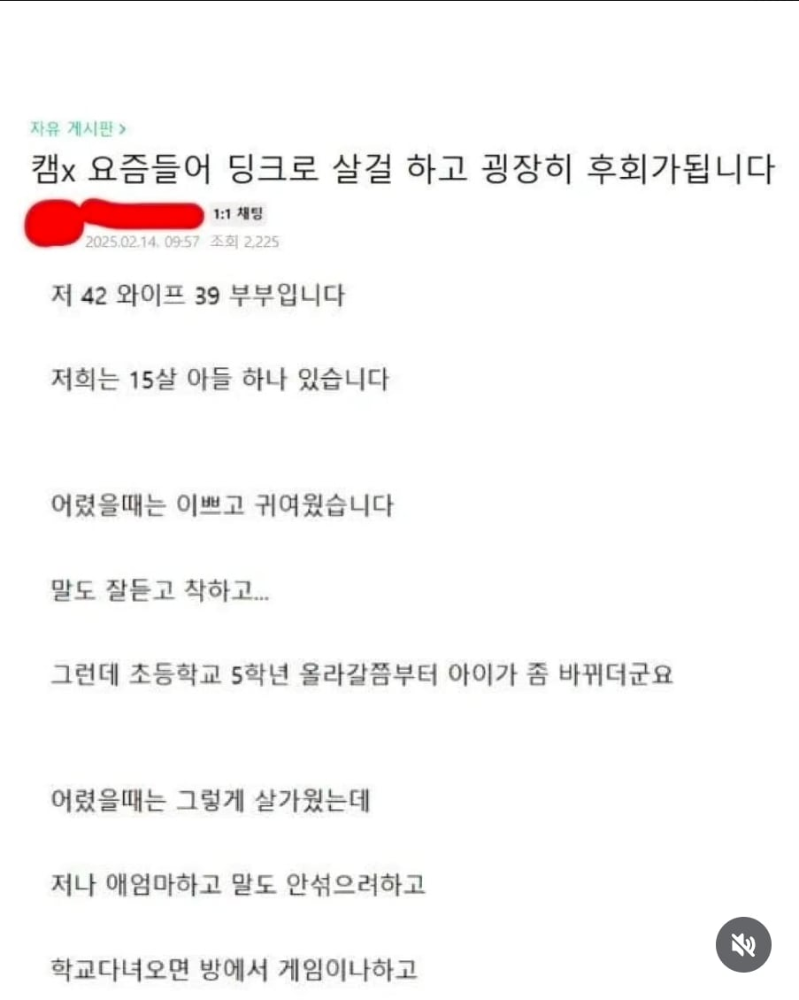
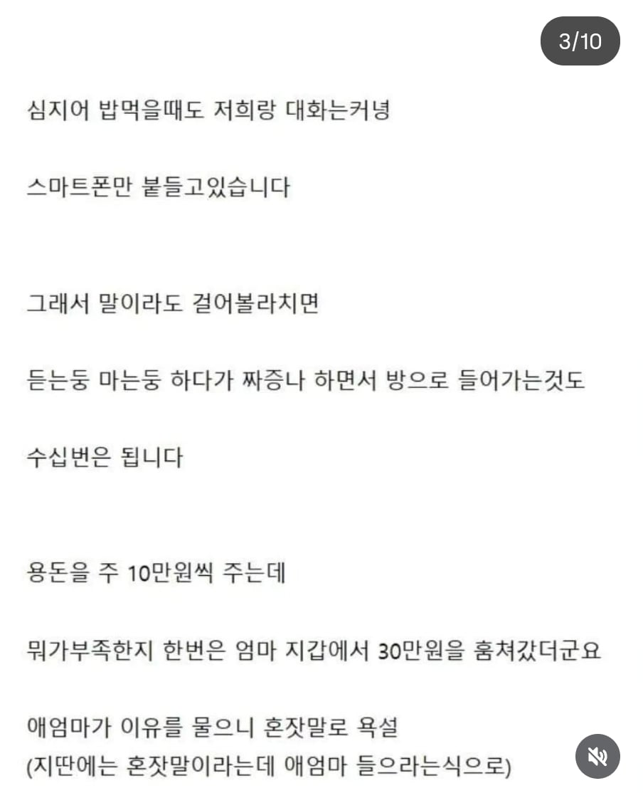
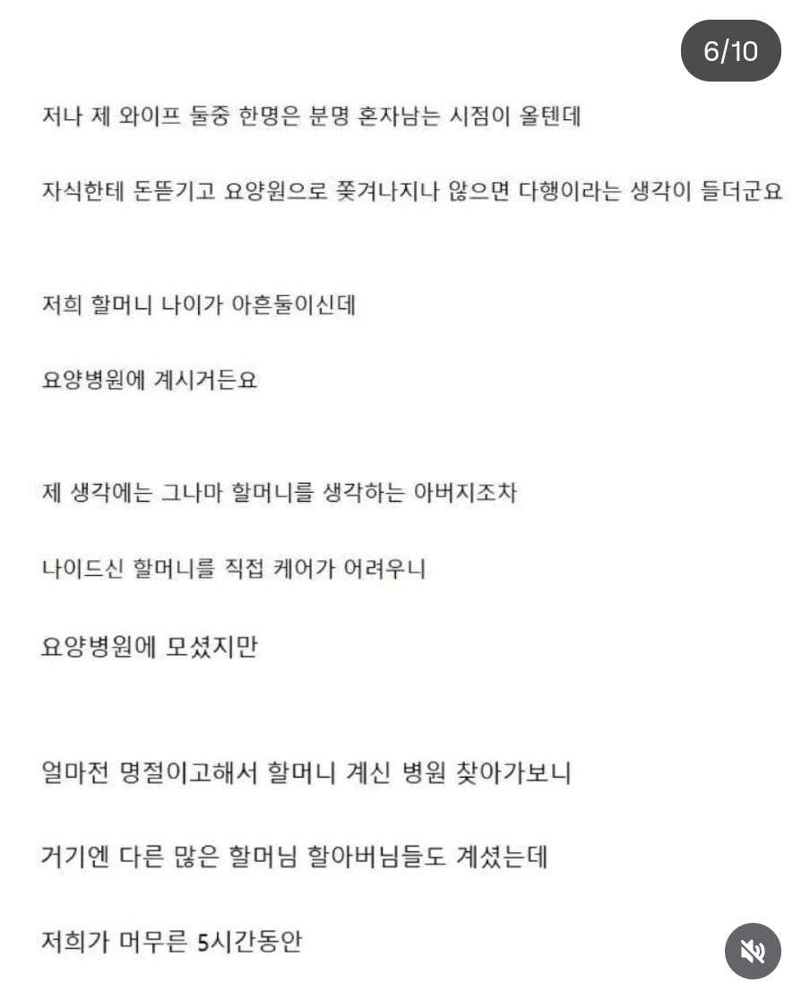
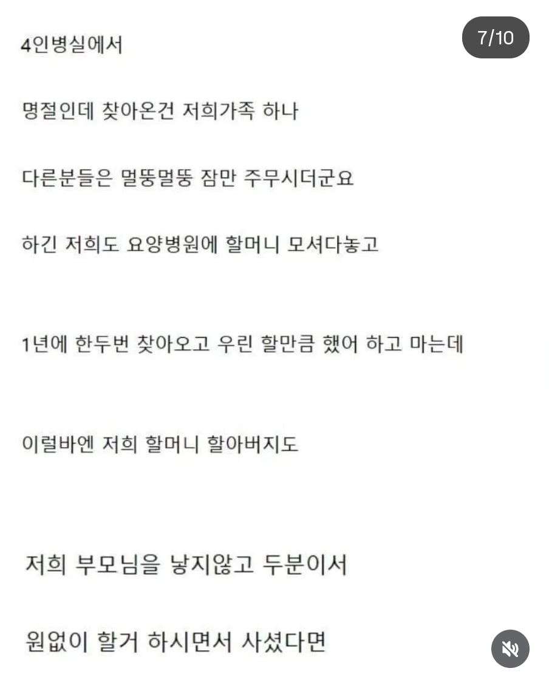
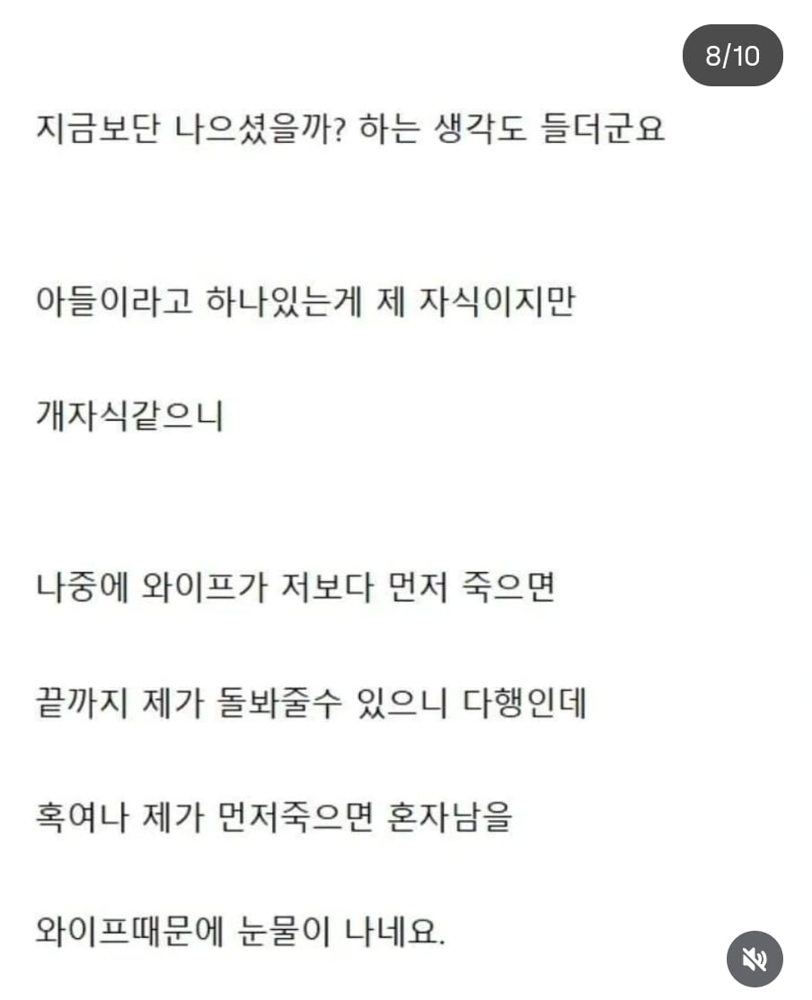
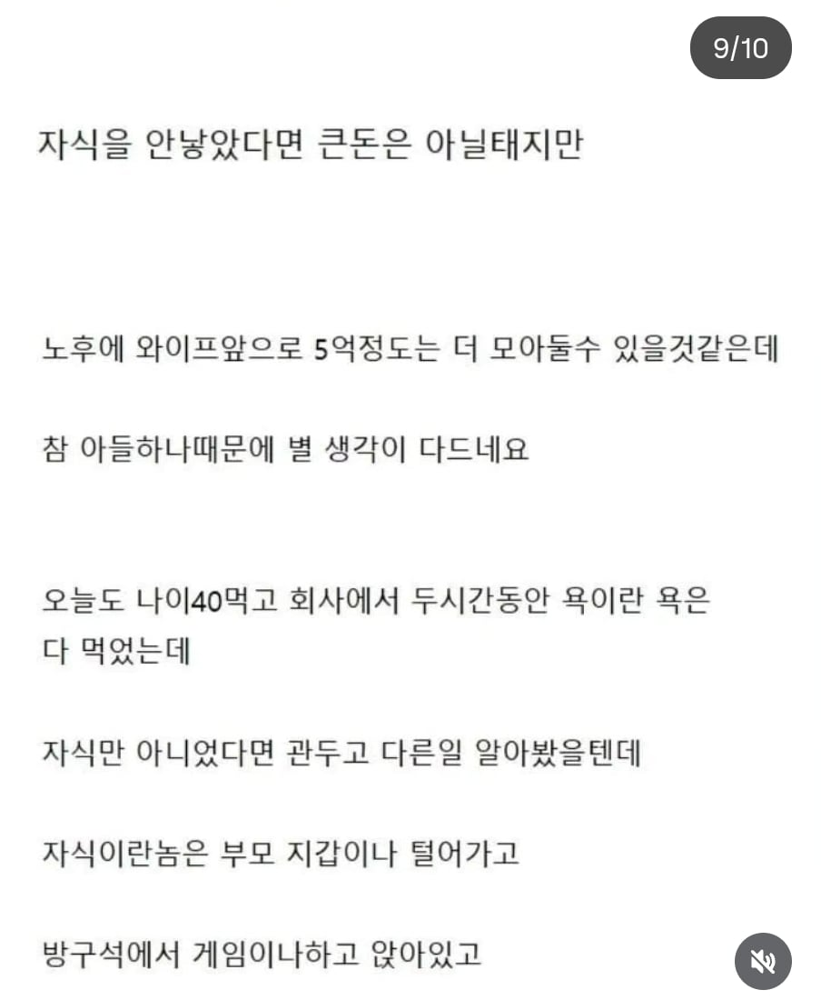
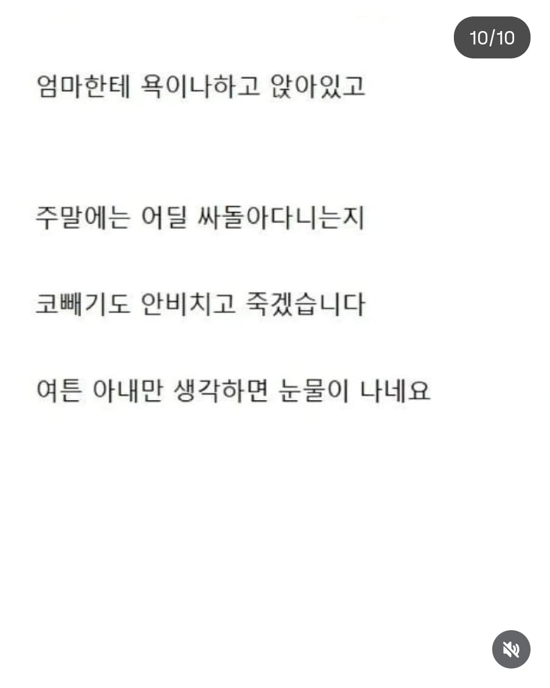

뭐 어떡하냐
사춘기 지나고 정상으로 되돌아오기를 기다릴수밖에







뭐 어떡하냐
사춘기 지나고 정상으로 되돌아오기를 기다릴수밖에
난 저거보다 더 한 새끼였음
솔직히 부모님이 사업하느라 나한테 관심 많이 못주기도 했고, 나도 성격 꼬여서 이상한 방향으로 일탈했었음. 집에 돈도 존나훔치고. 근데 결국 회복할 수 있었음. 지금은 뭐 나름 잘 사는중
낳지말걸 이런 생각이 든다고 인터넷에 올릴 정도면 이미 애한테 뭐라고 했을지 뻔하네
금쪽이 보고 생각이 바뀜. 부모잘못임
지는 요양원에 보내 놓고 지는 가기 싫다라...
아니... 애를 무슨 수단으로 생각하네
양육은 아이를 하나의 어른으로 길러내는 과정임
아이가 본인에게 행복을 준다는 둥 노후에 자길 돌봐주길 바란다는 둥...
애를 자산취급하니 머리가 자랄대로 자란 아이가 부모에게 붙어있고 싶을까?
물론 과거에야 아이가 곧 노동력이 되는 시대가 있었지만
이제는 패러다임이 바뀌면서 부모는 본인의 노후는 본인이 챙기는 거고 아이는 독립된 한 사람으로 부모 곁을 떠나 본인의 삶을 찾아가야 하는데
저쪽부모는 그럴 생각이 전혀 없어 보이네;;
애 진로가 아니라, 부양 받을 수 있을지 걱정부터 하는 놈이 애를 얼마나 잘 키웠겠음 ㅋ
높은확률로 지 업보임
글만 봐도 애에 대한 사랑이 없는게 보이네
뭘 믿고들 단정짓나 모르겠음 ㅋㅋ